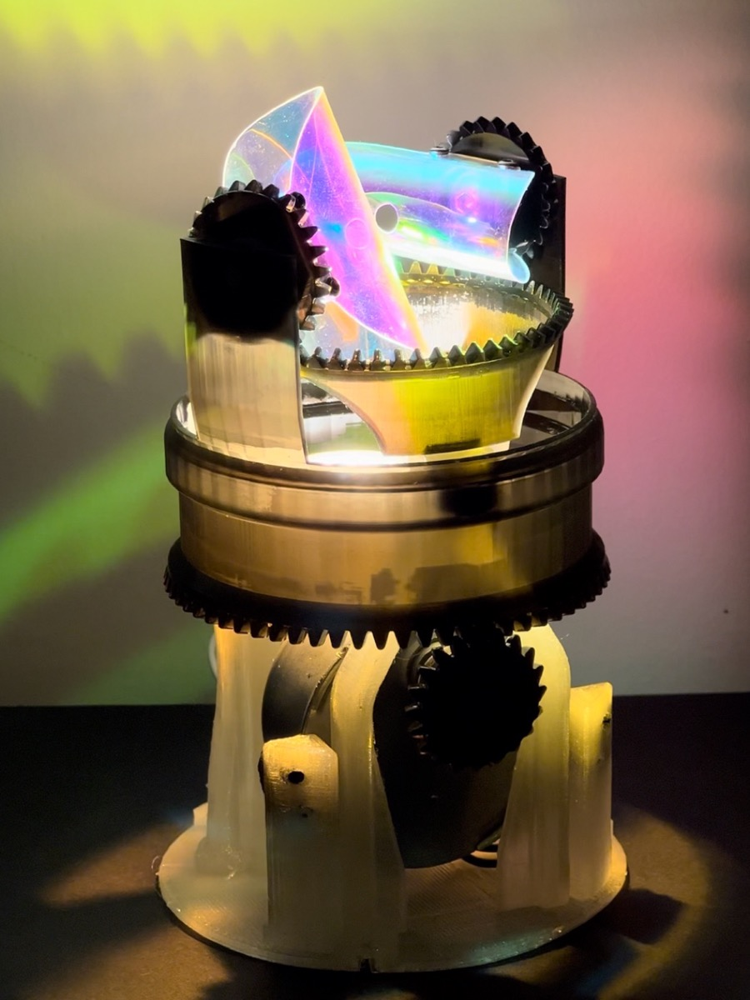
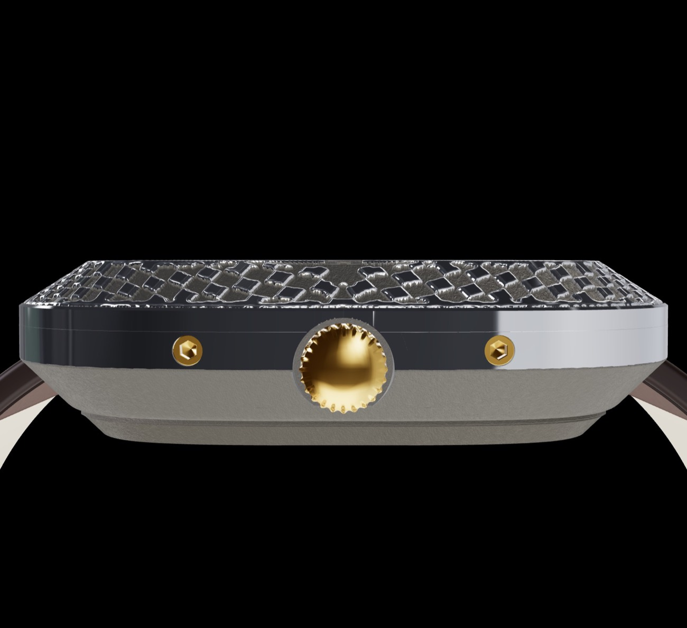

W1 se compose en ligne, dans le studio 3D DELIGNY. Pour chaque pièce, une matière et une finition. Puis
le dessin de la lunette, le décor du cadran, les index, et une ligne personnelle embossée au dos.
Chaque montre naît à la commande, accompagnée de son certificat et de son numéro. La production est
limitée à 1 000 crédits par an : plus une pièce s'élève en gamme, plus elle en consomme.
Le bracelet est taillé dans le cuir de pomme, une matière végétale née des résidus de l'industrie de la
pomme. L'aspect et la souplesse du cuir, sans origine animale. Il se ferme par une boucle déployante
dorée.
L'héritage de K1
De la lumière en mouvement au temps en mouvement
W1 descend en ligne directe de K1, la lampe cinétique DELIGNY. Une sculpture de lumière,
animée par un train d'engrenages tournant sur roulements à billes, qui projette au mur des motifs en
mouvement permanent.
K1 a posé les fondations. Engrenages, couronnes dentées et boîtier ajouré, imprimés d'un seul tenant, prêts
à tourner. Un module LED dont le faisceau et le refroidissement ont été dessinés ensemble. Et surtout une
conviction : l'impression 3D donne accès à des mécanismes et à des formes qu'aucun autre procédé n'autorise.
Après la lumière en mouvement venait le temps en mouvement. W1 reprend la même démarche à l'échelle du
poignet : un mécanisme logé dans une forme imprimée, des motifs qui jouent avec la lumière, une fabrication
pensée dès le premier trait.

Le mécanisme : couronnes dentées, film dichroïque.
Avant W1, il y eut Pattern watch. Premier prototype porté, fabriqué et assemblé à la
main, il devait répondre à une question : une montre imprimée en métal peut-elle être belle, confortable et
durable ?
Son boîtier en aluminium est imprimé en 3D. La lunette porte un motif en relief poli à la main : les
sommets captent la lumière, les creux gardent le grain du métal. Le cadran, imprimé en titane, reste brut,
avec ses index bâtons et la signature DELIGNY. Le bracelet est en cuir végétal de fibres de pomme.
Pattern watch a validé ce que W1 reprend : la forme coussin et les cornes intégrées, le dialogue du brut et
du poli, le confort d'un boîtier fin au poignet, l'assemblage à la main. Il a aussi montré ce qui devait
évoluer. Le mouvement japonais du prototype cède la place à un mouvement suisse standard, réparable partout.
Le motif unique devient une bibliothèque de décors réglables. Et la montre dessinée une fois devient une
montre que chacun compose.
Le boîtier adopte une forme coussin, entre le cercle et le carré. Il garde la douceur de
l'un, la présence de l'autre, et n'emprunte à aucune forme établie.
Des cornes qui disparaissent
Sur une montre classique, le bracelet tient par deux cornes qui dépassent du boîtier. Sur W1, elles sont
intégrées au boîtier : le bracelet semble naître de la montre elle-même, et la ligne court
sans rupture de la boucle à la lunette.
Plus fine à l'œil qu'à la mesure
La tranche, le flanc vu de profil, est volontairement très fine. L'œil lit l'épaisseur au bord : la montre
paraît plus plate qu'elle ne l'est, et se glisse sous une manchette.

De profil : la tranche fine et polie porte toute la lecture de l'épaisseur.
La matière
Le relief, et le dialogue du brut et du poli
La lunette et le cadran portent des motifs en bosse, où le dessin ressort,
ou embossés, où le dessin se creuse comme une gravure. Ce relief n'est pas rapporté : il naît
dans la matière, au moment même de la fabrication.
Le polissage se fait à la main, de façon sélective. Les sommets du motif sont polis et brillent, les creux
restent bruts, avec le grain mat du métal. De ce contraste naît la vie de la montre : elle change avec la
lumière, avec l'angle du poignet.
Les décors
Gravure, bas-relief, arêtes vives : le décor naît dans le métal
Sur W1, aucun décor n'est rapporté, collé ou imprimé en surface. Chaque motif est une forme
de la pièce elle-même, né en même temps qu'elle. Plusieurs familles de décor se répondent sur la lunette, le
cadran et le fond.
L'embossage, comme une gravure
Le dessin se creuse dans le métal : écailles, losanges, nid d'abeille, méandre grec, ou motif tiré d'une
image. La paroi du creux suit un angle et des facettes réglés au degré près. Le fond du creux reste brut et
sombre, la surface d'origine est polie. Au dos, le texte, nom, adresse, matières et ligne personnelle, est
embossé de la même manière.
Le bas-relief, comme une sculpture
Le dessin sort de la surface en volumes doux et modelés, à la manière d'une médaille : paysages, vagues,
topographie, terrasses, ou bas-relief composé à partir d'une image. Le relief se règle au centième de
millimètre. Il reste mat, ou se polit sur ses sommets.
Les arêtes vives, comme une taille de pierre
Clous de Paris, pointes de diamant, pyramides, moletages, facettes cristallines. Des géométries aux arêtes
nettes, calculées avec exactitude, facette par facette, pour que chaque reflet tombe juste.
Guillochés, stries et textures
Sur le cadran, les décors de la tradition horlogère, guilloché rectiligne ou croisé, côtes de Genève,
perlage, soleil, côtoient des textures plus libres : sablage, givre, pierre, réaction-diffusion. La signature
DELIGNY sort du cadran en bossage, ou s'y creuse lorsque le décor a du volume.
Chaque décor est vérifié avant fabrication : aucun détail plus fin que ce que le métal sait rendre, assez de
matière sous chaque creux, et un relief de cadran qui laisse toujours passer les aiguilles.
Matières et finitions
Une matière et une finition pour chaque pièce
Boîtier, lunette, cadran et fond se choisissent séparément. Une lunette en or sur un
boîtier en titane, un cadran en argent dans un boîtier en bronze : toutes les alliances sont permises.
Les matières
Aluminium (AlSi10Mg) : léger, gris clair, brut ou poli.
Titane (6Al-4V) : le plus léger des métaux nobles, inaltérable et hypoallergénique, d'un gris chaud.
Inox 316L : l'acier de l'horlogerie, brillant et résistant à la corrosion.
Bronze et laiton : métaux chauds, coulés à la cire perdue. Le laiton peut
recevoir un placage or jaune, or rose, rhodium blanc ou rhodium noir.
Argent 925 et or 18 ct (750) : coulés à la cire perdue, polis, poinçonnés
par le bureau de garantie.
Les finitions
Brut : le grain mat du métal tel qu'il sort de fabrication, microbillé.
Poli surface : seuls les sommets du décor sont polis, les creux restent bruts. C'est la
finition qui donne vie aux motifs.
Poli intégral : la pièce entière est polie miroir.
Tranche polie : sur un boîtier ou une lunette mats, le flanc seul peut être poli, pour
souligner la ligne fine du profil.
Cadran : brut aux arêtes cassées, ou poli intégral.
Le fond, au contact de la peau, est réservé au titane, à l'inox 316L et à l'or : des métaux qui ne se piquent
pas, ne verdissent pas et ne marquent pas la peau. L'aluminium brut, le laiton, le bronze, l'argent et les
placages en sont exclus.
La fabrication
Imprimée en métal, presque sans perte de matière
Boîtier, lunette et cadran sont imprimés en métal, couche après couche, par fusion laser
de poudre. Le procédé permet ce qu'aucun usinage ne permet : les motifs en relief, les cornes intégrées, la
tranche fine.
Chaque pièce peut recevoir sa propre matière : aluminium, titane, inox 316L, laiton, bronze, argent ou or
18 ct. Le fond, au contact de la peau, reste réservé au titane, à l'inox 316L ou à l'or : des métaux qui
résistent à la transpiration et à son acidité, sans marquer ni irriter.
L'horlogerie traditionnelle part d'un bloc de métal, dont l'usinage retire la plus grande part. L'impression
procède à l'inverse : seule la matière utile est déposée, et la poudre non fondue est tamisée puis réemployée.
Il ne reste que les fins supports d'impression.
Moins de métal extrait et transformé, aucun copeau : la matière est employée au plus juste.
Des pièces fabriquées à la commande : ni stock, ni invendus.
Un mouvement standard, que l'on répare au lieu de le jeter.
Les pièces peuvent être imprimées en Europe ou en Chine, au choix. L'assemblage, le contrôle et
l'étanchéité se font toujours en France, à Paris, à la main.
Le mouvement
Suisse, standard, réparable partout
W1 est animée par un mouvement à quartz suisse standard, le Ronda 763. Un choix délibéré :
fiable, précis, et surtout disponible partout.
N'importe quel horloger, dans n'importe quel pays, peut en changer la pile ou le remplacer, sans pièce
propriétaire. La montre est faite pour durer, et pour être réparée.
Au quotidien
Garantie 2 ans, résistante aux éclaboussures
Garantie 2 ans.
Résiste aux éclaboussures : pluie, lavage des mains. Elle ne se porte pas pour la baignade.
Fond en titane, inox ou or, au contact de la peau.
Pile remplaçable partout, chez n'importe quel horloger.